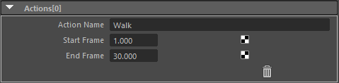

Action List¶
概要¶
このアトリビュートは、直接ビューに影響を与えることはありません
PythonやMELのスクリプトと組み合わせ、表示をカスタマイズすることができます
ゲームのアニメーション作成時に使われることが多いアトリビュートです
具体的な使い方は、[Actions (外部Pythonファイルの利用)]を参照してください
アトリビュート(Actions[*]枠内)¶

Action Name¶
アクション名を入力します
WalkJumpなど
Start Frame¶
アクションのスタートフレームを入力します
Note
End Frameアトリビュートが必要であれば、 Issues に報告をお願いします(著者は、スクリプトで制御できると考えています ( Actions (外部Pythonファイルの利用) ))
# basic cur_actions_end_frame = next_actions_start_frame - 1 # has margin frame? (各アクションの間にマージンが入りますか?) cur_actions_end_frame = next_actions_start_frame - margin_time - 1